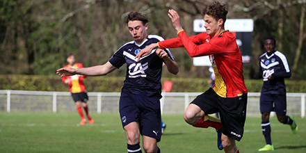

Sports
Formation, la génération coronavirus
Brendan Lebas, ici face à Lens la saison dernière en Coupe Gambardella, fait partie des jeunes Girondins en fin de contrat. PHOTO GUILLAUME BONNAUD
Jeunes - L'arrêt pour au moins quatre mois des centres de formation provoque une situation inédite dans le processus de progression des jeunes footballeurs
L ’annonce de la décision a fait moins de bruit que celle de la fin des championnats. Face à la crise sanitaire et la complexité des protocoles pour une reprise d’entraînement, la Fédération française de football a acté, il y a quinze jours, la fermeture jusqu’à l’été et la reprise de la prochaine saison de l’ensemble des pôles espoirs (16 masculins pour les 13-15 ans dont celui de Talence, un de futsal, 8 féminins pour les 16-18 ans dont celui de Mérignac) et fortement préconisé la même mesure pour les centres de formations des clubs professionnels (à partir de 15 ans). Une coupure de quatre mois (au moins) inédite dans le processus de progression des jeunes. Avec quelles conséquences ?
1 - 30 avril, une daté clé en confinement
Pour les jeunes en fin de contrat - aspirant ou stagiaire pro -, la date est attendue comme le couperet. Les clubs professionnels ont jusqu’au 30 avril pour leur proposer un nouveau contrat - stagiaire ou élite pour les aspirants, professionnel pour les stagiaires. À défaut, les concernés sont libres à partir du 1er mai. La très grande majorité ne sera pas gardée par leurs clubs. En 2020, la réflexion se sera donc arrêtée au 13 mars. « Pour ceux qui sont doués, ce n’est pas un souci, pointe Philippe Tranchant, ancien directeur du centre de formation de Caen. C’est plus problématique pour ceux qui sont entre deux, en retard sur le plan pubertaire. La décision doit être prise seulement sur le match aller, sans aller au bout, et certains ne vont peut-être pas être renouvelés alors qu’on aurait pu être plus patient avec eux. » L’ancien éducateur des Lemar, Guerreiro, Niang évoque aussi le poids du contexte général. « Dans certains clubs, je sais qu’il va y avoir des coupes drastiques sur le plan financier, la masse salariale et il est compliqué d’ajouter des contrats pros quand il y en a déjà beaucoup en cours.On va voir ceux qui comptent vraiment sur les jeunes, ou non », dit Philippe Tranchant. À Saint-Etienne, la coupure n’a pas changé le fond. « Les décisions ont été prises dès la période de la suspension », dit Jean-Luc Dogon, entraîneur des U19 des Verts.